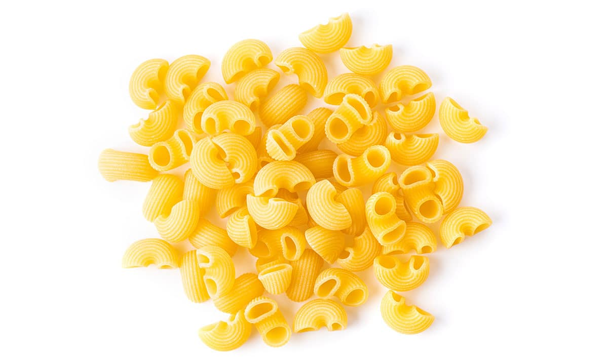
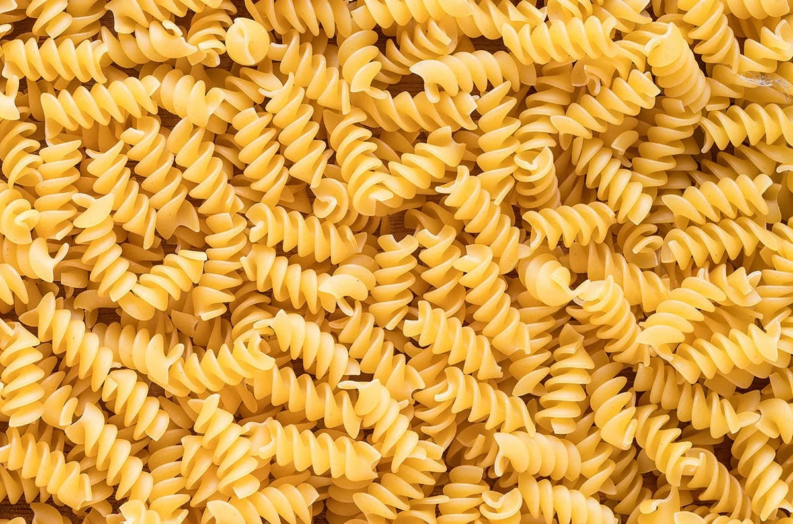
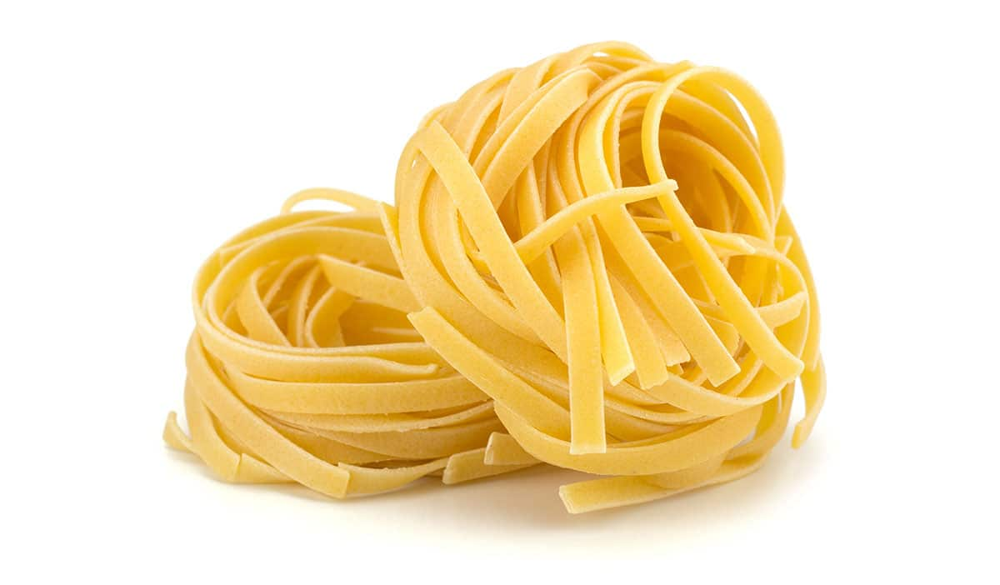

18 Types of Pasta
There are probably over 300 types of pasta and easily 1,200 pasta names, as so many have an Italian name and one or more regional names. Italian pasta names generally end in “ini, elli, illi, etti, ine, and elle which all denote “small”. Pastas deemed “large” end in “oni or one”.
Here are 19 common types of pasta (click the links on your right side to jump around this guide, or scroll to explore all of the varieties)!
| Name | Description | |
|---|---|---|
| Angel Hair | Angle hair is a thin variant of capellini (Italian for little hairs) which is in turn a thin version of spaghetti. In Italy angel hair is known as capelli d’angelo. It has been eaten in Italy since the 14th Century, and is, of course, today popular worldwide. It is most commonly used with seafood and lite sauces. It also goes well in soups. | |
 |
Conchiglie | You no doubt know this Italian pasta by its common name “shells”. Conchiglia is the Italian word for seashell. The shape is great for holding sauce. Shells are sometimes colored with tomato paste or spinach pigments, and is generally made from a hard variety of durum wheat which allows the pasta to retain its shell shape in all manner of cooking. Shells are also sold in a miniature version called conchigliette ideal for soup recipes. |
| Farfalle | Farfalle is the Italian name for bow-tie or butterfly pasta as it is the word for “butterfly”. Like so many other pastas, there is a larger version (Farfalloni) and a small version (Farfalline). Italian is a fun language. This is a North Italian pasta that was likely developed in the 1500s. Some sources say that it was accidentally invented by people making stuffed pastas. When the filling was gone they folded the leftover dough into what became the bow-tie shaped pasta we know today. Regardless of its origin, farfalle is a great pasta for most applications. Use it in casseroles, just top it with tomato sauce, or perhaps use it in pasta salads to leverage their “cute” shape. Give it a shot in this pasta with radicchio and goat cheese. | |
 |
Fettuccine | This much loved pasta is often used with cream sauces like alfredo sauce. I have friends that say you can really use it in just about any recipe calling for a long noodle such as linguini. I am not a pasta purist, but they are different kinds of pasta and have different super powers. So what is the story of Fettuccine vs Linguini? Linguine came from Genoa and is a flat narrow pasta made from just flour and water. Fettuccine is flat and wide and made from eggs and flour. Linguine is typically used with lite sauces and fettuccine heavy. I love it in this Porcini Pasta! |
| Fusilli | Fusilli is an Italian pasta (from Campania) shaped into a corkscrew. A fuso is a “spindle”, so it is possible the name fusilli was derived from fuso. It isn’t quite as clear as some other Italian pasta names which translate directly into the pasta’s shape. Like many other pastas, a variety of colors are made and sometimes whole wheat flour is used. You can use fusilli in any recipe that calls for spaghetti with the advantage that the curls will hold sauce better than traditional spaghetti. Fusilli has several sub-variants. Fusilli Bucati is a hollow version of fusilli, and Fusilli Napoletani is made the same way, but consists of a flat noodle. | |
.jpg) |
Gnocchi | Gnocchi are rather the oddball in the pasta world as they are not a noodle, but a dumpling made with potatoes, flour, and egg. Some Italian recipes call for ricotta cheese vs egg, but whatever recipe you use we strongly recommend you make your own. There isn’t anything wrong with store bought, but it’s just fun to make your own gnocchi! The key is the balance between potato, flour, and egg. If you want to try a heretical, at least to pasta purists, but healthier version of gnocchi, give this Sweet Potato Gnocchi a try. |
| Lasagna | Nothing says Italian like lasagne. Lasagna can be made with an almost endless number of major and minor variations. The large, flat sheet noodles, for example, can be flat or with curly edges. In Northern Italy they are generally made with eggs, but in the south they are not. Here at LiveEatLearn we like to know our food history, and lasagna has history. We believe that some form of lasagna was created by the ancient Greeks and brought to Rome after Greece was conquered by the Romans in the 2nd century BC. The Romans conquered everybody in time. It came to America in the 1800s with a large wave of Italian immigrants. | |
| Linguine | Linguine originated in Genoa and is a flat narrow pasta made from just flour and water. Linguine is typically served with thin tomato or cream sauces. It is often served with seafood such as mussels, clams, calamari, shrimp, or just about any seafood. Another common accompaniment to linguine is pesto which is a favorite in Genoa. Spice up your linguine with your own Homemade Pesto Genovese or try this Lemony Gremolata Linguine Recipe. | |
|  | Macaroni | Macaroni is a short tube-shaped pasta made from flour and water without eggs. Macaroni is great in pasta salads, casseroles, and of course in Macaroni and cheese. Try it in our favorite Truffle Mac & Cheese. |
| Orzo | Orzo is Italian for “barley” which describes the look of this tiny pasta that looks much like rice, but masks the fact that it is pasta. Orzo is a good soup pasta often used with chicken. Orzo is commonly used in a variety of salads. Give it a shot in this Creamy Vegan Orzo with Carmelized Onions Salad or perhaps this Argentine inspired Chimichurri Orzo Salad (or grab our comprehensive guide to cooking orzo!) | |
| Pappardelle | Pappardelle pasta is a long egg and flour pasta that can be cut up to an inch wide. It is native to Tuscany where it was created in the 14th Century. In Italy it is traditionally eaten with heavy meat sauces. Try it in our Marry Me Pesto Pasta! | |
| Penne | Penna is the Latin term for “quill” which is appropriate to penne pasta whose ends are cut at an angle resembling a fountain pen. Penne is the ubiquitous tube-shaped pasta with ridges that is used in so much American cooking. Unlike so many pastas, penne pasta is a relative newcomer to Italian cuisine having been invented in Genoa in 1865. Penne’s hollow shape and ridges hold thick sauces well, so despite its larger size it goes well in recipes like this Truffle Macaroni and Cheese, Baked Ziti, or One Pot Pasta! | |
 |
Ravioli | Ravioli is another pasta we probably don’t need to write about as its use is widespread. It is usually made with an egg and flour pasta. The cut squares of pasta are filled with meats, vegetables, or ricotta cheese then sealed. We assert that ravioli is best served in a light tomato sauce so that the sauce does not take center stage over the fillings. Ravioli likely appeared in Italy in the 14th Century, and has been popular since. In Italy the family making of ravioli is arguably as important as eating it as a family. |
| Rigatoni | Rigatoni is a large hollow pasta with ridges. Rigato is Italian for ridged, thus the name. It is very similar to penne, but bigger and without the angled ends. This Southern to Central Italian pasta is large enough to hold all manner of fillings, and holds its shape well in baking. Try it in this Vegetable Bolognese with Rigatoni. | |
|  | Rotini | Rotini pasta is a pasta of Northern Italy that is very similar to fusilli. Both pastas are corkscrew shaped, but fusilli is twisted around a rod and rotini is shaped by an extruder. Both can be used in any recipe in which you want a corkscrew, sauce holding, pasta. Rotini is great in pasta salads, and can often be found in spinach infused green or tomato infused red color. |
| Spaghetti | Spaghetti is the long thin pasta we all grew up with. In the United States the most popular use is with meatballs, tomato sauce, and perhaps vegetables. Try our favorite Vegetarian Carbonara if you want to go meatless, or try it in this unconventional (but delicious) Spaghetti Pizza! | |
|  | Tagliatelle | The name of this pasta was derived from the Italian word tagliare which means “to cut”. Tagliatelle is an egg pasta dating to the 15th Century from Northern Italy. It comes in long flat ribbons looking much like a slightly wider version of fettuccine. The traditional Italian way to eat Tagliatelle is to eat it fresh (rolled and cut by hand) with meat sauce. If you don’t want to make your own fresh pasta, you can certainly buy it dry in either the traditional yellow color or green containing spinach. Give it a try in this Porcini Pasta. |
| Ziti | Ziti is a thin tube-shaped pasta that holds up in the oven (perfect for Baked Ziti). It isn’t large enough to be stuffed, but holds sauces well due to its hollow core. Ziti is an extruded pasta typically about 10” long that you should break before cooking. Classic American baked ziti is made from some combination of parmesan, ricotta, vegetables, various meat options, and of course a meaty tomato paste. In Sicily it is considered a wedding dish. In fact ziti is the plural of zito which means “bride” or “groom”. |
Mouse over me
Hello World!